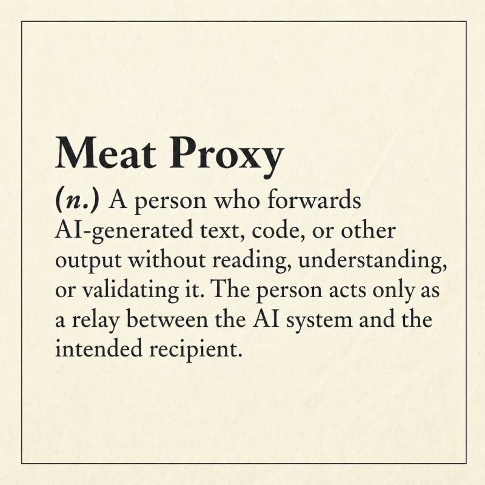
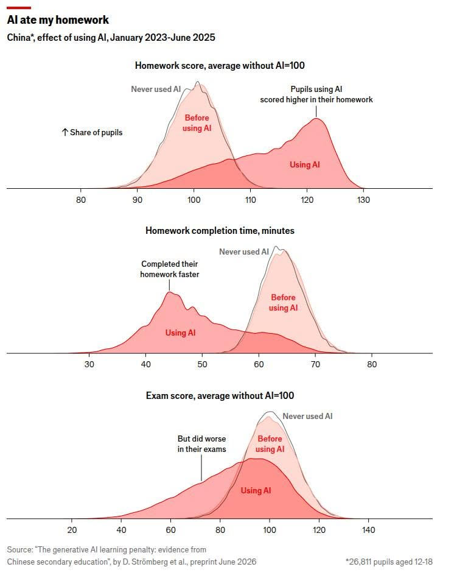

Vi samler også op på lektion 1 og eksamensopgaven undervejs.
Fra en idé i hovedet til noget, en maskine kan udføre.
I kender allerede R. Næsten alt, vi gør i dag, kan oversættes direkte.
Hver kodecelle har derfor to faner: Python og R. Vælger I R ét sted, skifter alle celler med.
500 opdigtede borgere. Cellen kører af sig selv, så tabellen panel findes resten af lektionen.
import pandas as pd henter biblioteket pandas, som kan arbejde med tabeller. pd er det korte kaldenavn.
url.
pd.read_csv(url) læser filen og gemmer den som en tabel (en DataFrame) med navnet panel.
panel.head() giver de første fem rækker. Det er cellens sidste linje, så resultatet vises.
Tallet yderst til venstre (0, 1, 2 …) er rækkens nummer, også kaldet indekset. Python tæller fra 0.
url. <- betyder gem.
read.csv(url) læser filen og gemmer den som en data frame med navnet panel.
head(panel, 5) viser de første fem rækker. R tæller rækkerne fra 1.
Datasættet er syntetisk: tallene er trukket tilfældigt og siger intet om virkeligheden. Sådan er det lavet: data/lav_borgerpanel.py.
En computer gør præcis det, du skriver. Ikke det, du mener.
“Kan du hente en kop kaffe?”
Vi forstår det underforståede: gå ud i køkkenet, tag en kop, hæld kaffe i, kom tilbage. En maskine skal have hvert trin for sig:
kop = hent_kop_fra_koekken()kaffe = haeld_kaffe(kop)aflever_ved_skrivebord(kaffe)1 · Tanke
“Jeg vil kende gennemsnitsindkomsten i panelet.”
2 · Algoritme
“Læg alle tallene sammen, og del med antallet.”
4 · Maskinsprog
10110000 01100001Vi skriver på niveau 3. Men arbejdet ligger i at komme fra 1 til 2: at gøre tanken præcis.
De fem første indkomster i panelet.
Som formel:
To trin: læg sammen, del med antallet. Det er hele algoritmen.
panel["indkomst"] vælger kolonnen indkomst fra tabellen. Vi giver den et kort navn.
.sum() lægger alle tallene i kolonnen sammen: første trin i algoritmen.
len(...) tæller, hvor mange værdier der er. Det er n i formlen.
/ dividerer: andet trin i algoritmen. Resultatet gemmes som gennemsnit.
print() skriver en tekst og en værdi ud. Komma adskiller de ting, der skal vises.
Skriv panel["indkomst"].mean() på en ny linje nederst. Får I det samme?
panel$indkomst vælger kolonnen indkomst. I R henter $ en kolonne ud af en tabel.
sum() lægger tallene sammen.
length() tæller, hvor mange værdier der er.
/ dividerer summen med antallet.
cat() skriver tekst og tal ud efter hinanden. "\n" betyder ny linje.
Sammenlign med mean(panel$indkomst).
De to nederste bokse er en forenklet illustration, ikke rigtig maskinkode.
Som algoritme, trin for trin:
Det er en løkke. Tryk på knapperne og se forskellen på at spørge én ad gangen og at spørge hele kolonnen.
for tal in ...: er en løkke. Den tager det første tal, kalder det tal, kører de indrykkede linjer, tager det næste tal, og så videre. .head(6) begrænser os til de seks første rækker (dem fra figuren).
: og indrykningen på næste linje er vigtige. Sådan ved Python, hvilke linjer der hører til løkken.
if tal > 20000: stiller et ja/nej-spørgsmål. Kun hvis svaret er ja, køres linjen under.
print(...) skriver teksten og tallet ud.
Senere i dag skriver vi det samme på én linje, uden løkke.
Skift 20000 ud med 40000. Hvor mange er tilbage?
for (tal in ...) er en løkke: den tager ét tal ad gangen og kalder det tal. head(..., 6) giver de seks første.
{ } viser, hvilke linjer der hører til løkken. (Python bruger indrykning.)
if (tal > 20000) stiller et ja/nej-spørgsmål.
cat() skriver teksten og tallet ud.
Skift 20000 ud med 40000. Hvor mange er tilbage?
Maskiner er dumme, men utroligt hurtige og pålidelige.
De kan gemme tal, sammenligne værdier, hoppe rundt i koden og gentage instrukser. Milliarder af gange i sekundet, uden fejl. Kodningens kunst er at bryde et menneskeligt problem ned til de simple trin og sætte dem sammen igen.
Hvad sker der med læringen, når maskinen skriver koden?


Her kører I jeres notebooks resten af kurset. Vi logger ind sammen.
Syv begreber, I vil kunne genkende i al Python-kode.
En notebook er et dokument, hvor tekst og kode står side om side. Koden står i celler, som I kører én ad gangen.
print().+ er ligegyldige for maskinen, men ikke for det menneske (jer selv), der skal læse koden i morgen.# er en kommentar. Maskinen ignorerer den.2 +2 og 2 + 2 er det samme.
Sæt print() om hver linje, fx print(1+1). Hvad ændrer sig?
I R vises alle tre resultater. Det er en af de små forskelle på de to sprog.
print(): vis mig det herprint() er den udtrykkelige besked til maskinen. I får brug for den, hver gang I vil se mere end ét resultat.
print(...) viser det, der står i parentesen. Nu ser vi alle tre resultater.
# er en kommentar til mennesker. Maskinen springer den over.
Hello er navnet på en variabel.
Skriv jeres eget navn i stedet for World.
print(...) viser det, der står i parentesen.
print() viser tekst med anførselstegn og [1] foran.
cat() skriver kun selve teksten. \n betyder ny linje.
Skriv jeres eget navn i stedet for World.
En variabel er et navn, I sætter på en værdi, så maskinen kan gemme den, og I kan hente den frem igen.
indkomst = 28600 betyder: gem værdien 28600, og kald pladsen i hukommelsen indkomst.
Maskinen er ligeglad med, om navnet giver mening. Vi vælger meningsfulde navne for at kunne forstå vores egen kode.
I Python er (næsten) alt et objekt: et tal, en tekst, et datasæt, en mappesti, et billede. Et objekt er både data og de ting, data kan gøre. Det kaldes objektorienteret programmering (OOP).
indkomst. Ét lighedstegn betyder gem, ikke er lig med.
indkomst, gang med 0.37, og gem resultatet som skat. Python bruger punktum som decimaltegn.
skat fra indkomst, og gem resultatet som udbetalt.
De 37 % er et regneeksempel, ikke de rigtige skatteregler.
Sæt indkomst = 40000 og kør igen. Alle tre resultater følger med.
indkomst. I R bruger vi <- til at gemme. = virker også, men <- er konventionen.
skat.
udbetalt.
Sæt indkomst <- 40000 og kør igen.
a og b.
/ giver altid et kommatal.
** betyder opløftet i. a ** 2 er 42 · 42.
// er heltalsdivision: 42 går én hel gang op i 56.
% giver resten: 56 − 42 = 14.
Hvad giver a % 2? Og b % 2? Hvad kan man bruge det til?
a og b.
^ i R (Python: **).
%/% og %% i R (Python: // og %).
Hvad giver a %% 2? Og b %% 2?
Typen fortæller maskinen, hvad en værdi er, og hvad den kan gøre med den. De to vigtigste: tal (int, float) og tekst (str).
"2" til tekst, ikke til et tal.
+ sæt sammen. For tal betyder + læg sammen. Samme tegn, forskellig type, forskelligt resultat.
Fjern anførselstegnene, og kør igen. Prøv også "Hej" * 3.
+ og giver en fejl.
I R sætter man tekst sammen med paste0("2", "2").
type()Når koden ikke gør, som I forventer, er første skridt som regel at spørge, hvilken type I har med at gøre.
type(a) svarer int: et heltal (integer).
float. Derfor står der 21.0 og ikke 21.
"42" med anførselstegn er tekst, en str (string).
int(c) laver teksten om til et tal. Nu kan vi regne med det.
Tal, der er blevet til tekst, er en klassisk fejlkilde, når vi indlæser data.
Hvilken type har panel? Og panel["region"]?
class(). 42L er et heltal (integer).
numeric).
"42" med anførselstegn er tekst (character).
as.integer() laver teksten om til et tal.
Hvilken klasse har panel? Og panel$region?
En funktion tager noget ind (argumenter), gør noget ved det og giver noget tilbage.
I har allerede brugt flere: print(), len(), int(), type().
Python har en række indbyggede funktioner, og I kan definere jeres egne med def. Det svarer til at lære maskinen en ny instruks, som I regner med at skulle bruge igen.
alder får et kort navn.
len(), sum() og max() tager hele kolonnen ind og giver ét tal tilbage.
sum(alder) / len(alder), så round(..., 2).
round() tager to argumenter adskilt af komma: tallet og antallet af decimaler.
Find den yngste med min(alder).
alder får et kort navn.
length(), sum() og max() tager hele kolonnen ind og giver ét tal tilbage.
round(mean(alder), 2): først gennemsnittet, så afrunding til 2 decimaler.
Find den yngste med min(alder).
def definerer en ny funktion med navnet efter_skat. I parentesen står argumenterne. sats=0.37 er en standardværdi: den bruges, hvis I ikke angiver andet.
return sender resultatet tilbage til den, der kaldte funktionen.
sats er derfor 0.37.
Der sker ingenting, når funktionen defineres. Først når den kaldes, bliver opskriften udført.
Tilføj linjen print(efter_skat(panel["indkomst"]).head()). Funktionen virker også på en hel kolonne.
function(...) laver en funktion, og <- gemmer den under navnet efter_skat. sats = 0.37 er en standardværdi.
sats er 0.37.
Tilføj linjen print(head(efter_skat(panel$indkomst))). Funktionen virker også på en hel kolonne.
En metode kaldes med punktum efter objektet: objekt.metode().
Hvilke metoder I kan bruge, afhænger af objektets type. En tekst kan noget andet end en kolonne med tal.
.strip() fjerner mellemrum i begge ender af teksten.
.strip(), og på resultatet .upper(), som laver alt til store bogstaver.
.count("a") tæller, hvor mange gange a forekommer.
.mean() er gennemsnittet, .max() den største værdi.
.str giver adgang til tekstmetoderne for hele kolonnen på én gang. .head(3) viser de tre første.
Prøv panel["region"].value_counts(): hvor mange bor i hver region?
trimws() fjerner mellemrum i begge ender.
funktion(objekt) og pakker funktionerne ind i hinanden.
mean(), max() og toupper() virker på hele kolonnen på én gang.
Prøv table(panel$region): hvor mange bor i hver region?
Et bibliotek er en samling færdige funktioner, som andre har skrevet og delt. Python kan ikke selv læse en CSV-fil. Det er pandas, der kan.
import pandas as pd henter hele biblioteket og giver det kaldenavnet pd.from statistics import median henter kun én funktion.Kaldenavnet pd er så udbredt, at næsten al Python-kode, I møder, bruger det.
Et bibliotek installeres én gang (pip install pandas / install.packages("dplyr")), men indlæses, hver gang I starter en ny session.
Træk i skyderen. Hvor mange søjler skal der til, før fordelingen bliver tydelig?
matplotlib er biblioteket, der tegner figurer. plt er dets kaldenavn.
statistics henter vi kun funktionen median.
.plot(kind="hist", bins=...) tegner et histogram. bins er antallet af søjler, og her styres det af skyderen. Linje 6 er farver og størrelse.
plt.tight_layout() sørger for, at teksten ikke bliver skåret af. plt.show() viser figuren.
median() er indbygget i R.
hist() tegner et histogram. breaks er antallet af søjler og styres af skyderen. R runder selv til “pæne” intervaller, så antallet passer ikke altid præcist.
True og FalseEn boolean kan kun være to ting: True eller False. Det er svaret, når I stiller maskinen et ja/nej-spørgsmål.
At forveksle = og == er en af de allerhyppigste fejl. Booleans er fundamentet under al filtrering af data.
indkomst.
True eller False.
and: svaret er kun True, hvis begge dele er sande.
or: svaret er True, hvis mindst én del er sand.
Skift and ud med or i linje 7. Hvorfor ændrer svaret sig ikke?
TRUE og FALSE med store bogstaver.
& betyder og (Python: and).
| betyder eller (Python: or).
Skift & ud med | i linje 7. Hvorfor ændrer svaret sig ikke?
Sådan spurgte vi tidligere: én række ad gangen.
Nu spørger vi hele kolonnen på én gang. Det kaldes vektoriseret kode, og det er sådan, vi arbejder med data i pandas.
Spørgsmålet panel["indkomst"] > 20000 giver én boolean pr. række. Tabellen beholder de rækker, hvor svaret er True.
viewof graense = sds1.skyder({ label: "Indkomst over", min: 10000, max: 100000, step: 5000, value: 20000, enhed: "kr." })over er en ny kolonne af True og False. graense er tallet fra skyderen.
True tæller som 1 og False som 0. Summen er derfor antallet af personer over grænsen.
panel[over] beholder kun de rækker, hvor over er True. .head(4) viser de fire første.
TRUE tæller som 1, så summen er antallet over grænsen.
panel[over, ] beholder de rækker, hvor over er TRUE. Kommaet betyder: alle kolonner.
objekt.metode().Nu er det jeres tur. Koden bliver husket, hvis I åbner slides igen derhjemme.
Find medianen af alderen i panelet.
______ med den rigtige metode.
Hvor mange i panelet bor i Nordjylland?
"Nordjylland"..sum() til at tælle?
Det vigtigste
En maskine gør præcis det, I skriver. Tænk i trin, og spørg hele kolonnen på én gang.
Øvelser
Notebook med dagens øvelser og Gæt outputtet (PDF). Kør dem i UCloud.
Næste gang
Lektion 3: Data wrangling. Vi vælger, filtrerer og grupperer med pandas.
Tilbage til lektionens side · Alle lektioner